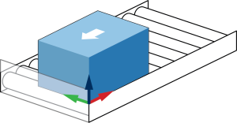
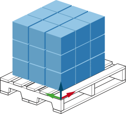
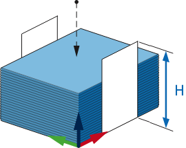
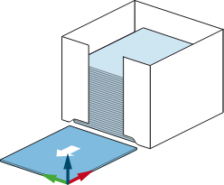

ロボットセルは、ロボットとその作業環境で構成されます。 パレットビルダーを適切に操作するには、ロボットがやり取りするステーションと使用するグリッパーを定義する必要があります。
パレットビルダーには、供給、積付、ディスペンサー(センサ使用)、ディスペンサー(固定)の 4 つの異なるステーションタイプがあります。
 供給: このタイプのステーションは、通常はコンベヤーを介してパレットに積み込まれる製品(箱)を供給します.
 積付: このステーションは、パレット、セパレーター、および製品(箱)を組み合わせて積付パターンを形成する方法を定義するために使用されます。
 ディスペンサー(センサ使用): パレットまたはセパレーターのスタックが与えられた場合、センサーを使用してスタックの一番上のアイテムを見つけてピッキングするときに、このステーションを使用できます。
 ディスペンサー(固定): このステーションは、セパレーターとパレットがピックアップのために特定の場所に供給されるときに使用されます.
新しいステーション ボタンを使用してステーションを作成するか、 ステーションを編集およびステーションを削除ボタンを使用してステーションを変更または削除できます。
パレタイジング セルの設定または変更が完了したら、マスタージョブの生成を押して、パレタイジング作業を管理するマスタージョブを作成できます。 マスタージョブフロー変数は、パレタイズ状態を制御する I 変数を参照します (例：パレタイズ、サイクル完了後の停止、ストッパー)。
複数の積付ステーションが存在する場合、追加のオプションが表示され、積付ステーション間でパレタイズ操作がどのように移行するかを指定します。 積付ステーショントラッキングI変数 は、アクティブな積付ステーションを制御します。 アクティブな積付ステーションは各サイクルの後、または現在の積付ステーションが完了した後に変更できます。
注: 積付ステーションは、[積付エディター] 画面で指定された順序で表示されます。
パレットビルダーデータベース (セルのセットアップ、取り動作、レイアウト(段)、積付...) は、[データベースを USB に保存] ボタンを使用して USB ドライブにエクスポートできます。 これにより、USBからデータベースをロード を使用して、同じセットアップを別のスマートペンダントに復元またはロードすることができます (ペンダントを変更する必要がある場合)。
注: バージョン 2.3 より古いスマート ペンダントでは、セル設定がジョブにエクスポートされます。 その後、スマートペンダントのファイル転送ユーティリティを使用して、ジョブを USBドライブに転送する必要があります。